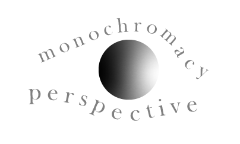

Complete Colorblindness
The most severe type of color vision deficiency is called monochromacy (1). This occurs when only one type of cone functions or no cones function, resulting in the absence of any color. Blue cone monochromacy refers to the correct functioning of only the blue cones while rod monochromacy refers to the absence of any functioning cones (2). Study shows that these are rare conditions that make an individual not be able to perceive other colors than black and white. Only approximately one in 10,000 people inherit this form of color vision deficiency; it is more commonly an acquired condition (5).
Normal
Vision